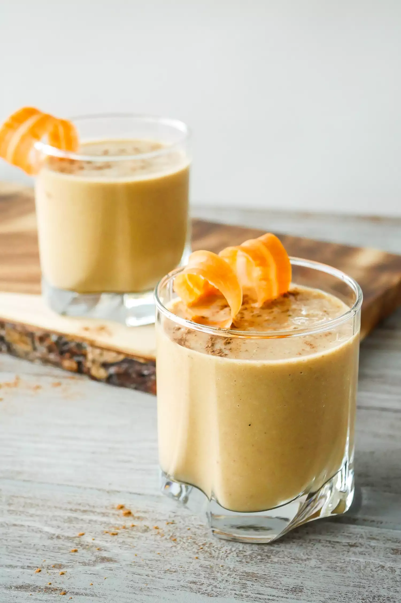

Carrot Cake Smoothie
Creamy, slightly sweet, spiced, and reminiscent of carrot cake, this Carrot Cake Smoothie packs in veggies for a quick breakfast or snack any time of day.

Ingredients
- 2/3 cup (2 ounces) grated frozen carrots
- 2/3 cup banana slices, frozen
- 3 tablespoons (about 2 large) pitted dates, finely chopped
- 2 tablespoons sweet potato purée, frozen
- 2 tablespoons walnuts, chopped
- Dash ground cinnamon
- 1 1/2 cups vanilla oat milk
- 1 teaspoon maple syrup, optional
Method
1. Add ingredients into blender:
In a blender add the carrots, banana slices, dates, sweet potato purée, walnuts, cinnamon, vanilla oat milk, and maple syrup if using.
2. Blend smoothie and serve:
Blend the ingredients on high for 30 seconds to 1 minute, until smooth, thick, and creamy. Add 1 tablespoon of vanilla oat milk at a time, if needed, to reach desired consistency. Serve